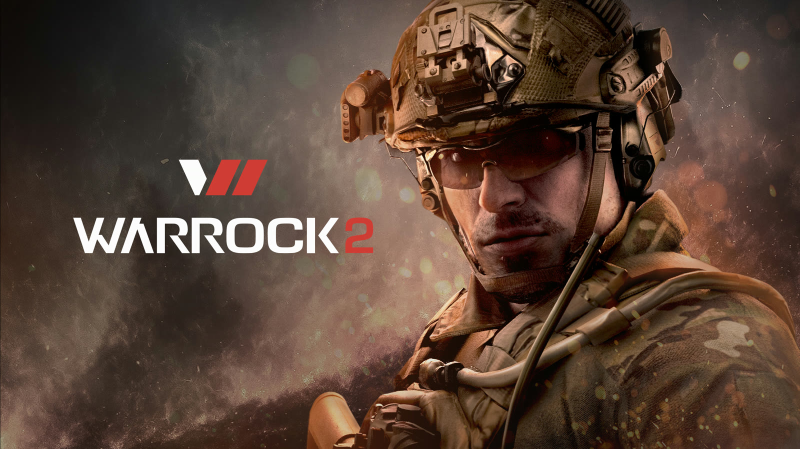
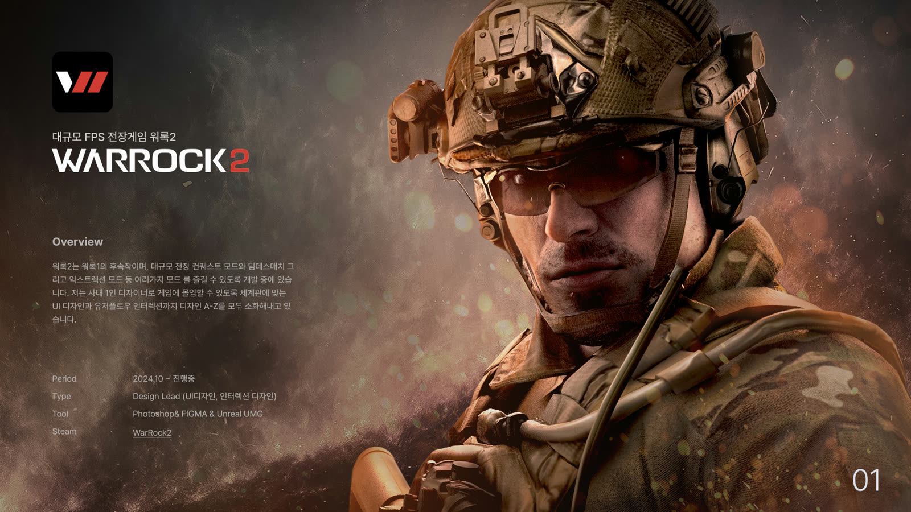
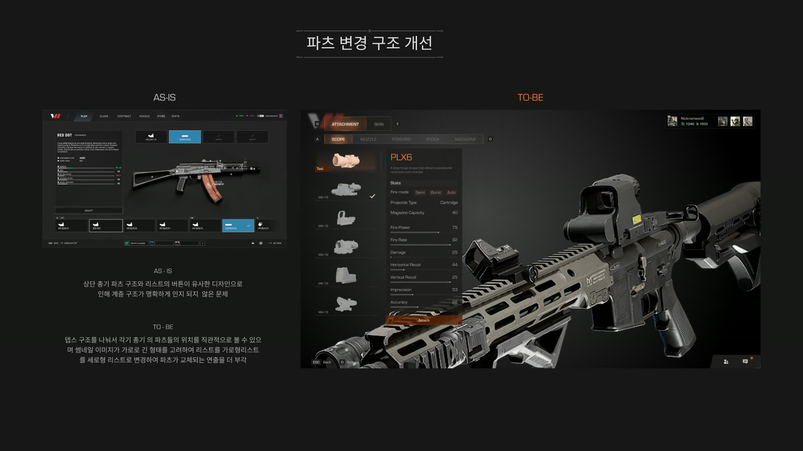
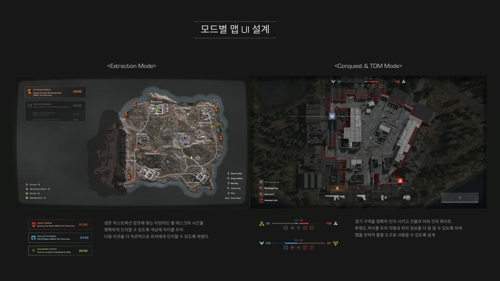
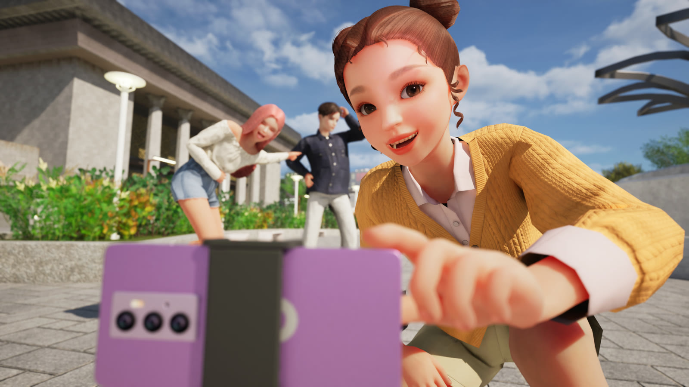
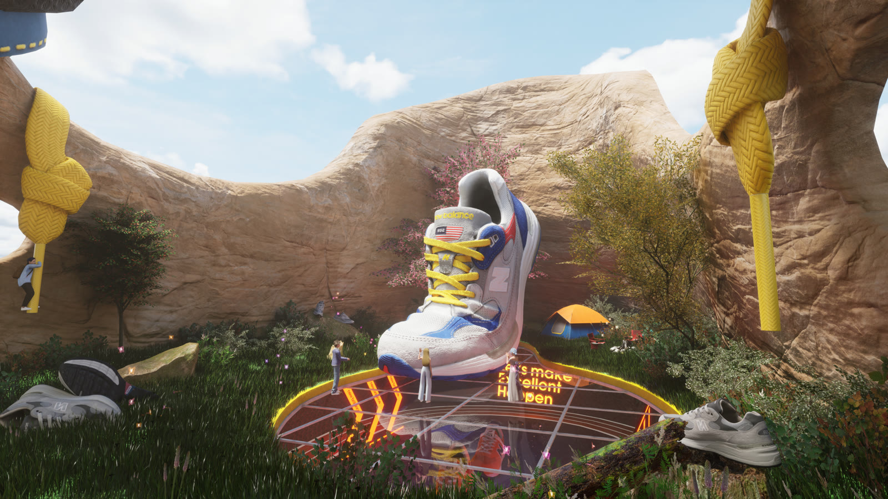

기여도 90%
기여도 90%크로노오디세이
2025.02~
Background
PC/콘솔 멀티플랫폼 MMORPG의 UX 디자인 시스템을 구축하고, CBT 피드백을 기반으로 플레이어 경험을 개선하는 프로젝트입니다.
Role & Result
UX 플로우 전면 개선, 햅틱 UX 설계, CBT1(25.06) 피드백 분석 및 개선안 도출·적용을 담당했습니다.
공식 사이트 바로가기 →사용자 중심의 올바른 문제 정의로 복잡성을 풀어내고, 다양한 기술을 시각화하여 새로운 경험을 전달하는 디자이너 이성원입니다.
🙋🏻♂️ 안녕하세요, ‘크로노스튜디오’에서 UX디자이너로 일하고 있는 이성원입니다.
기여도 90%PC/콘솔 멀티플랫폼 MMORPG의 UX 디자인 시스템을 구축하고, CBT 피드백을 기반으로 플레이어 경험을 개선하는 프로젝트입니다.
UX 플로우 전면 개선, 햅틱 UX 설계, CBT1(25.06) 피드백 분석 및 개선안 도출·적용을 담당했습니다.
공식 사이트 바로가기 →
기여도 100%워록1의 후속작으로, 대규모 전장 컨퀘스트·팀데스매치·익스트랙션 등 여러 모드를 즐길 수 있는 FPS. 사내 1인 디자이너로서 세계관에 맞는 UI 디자인부터 유저플로우·인터렉션까지 디자인 전 과정을 담당하고 있습니다.
UI Design Lead로 게임 UX 사용성을 개선하고, Unreal Material·애니메이션을 활용한 UI 연출을 주도했습니다.
🏆 튀르키예 ‘바이트사’ 투자유치







기여도 40%3D 기반 UGC 소셜/메타버스 플랫폼. 초기 UX 기획부터 GUI 디자인, UMG까지 End-to-End로 진행했습니다.
온보딩 전략 개선으로 재방문율 2배 증가, 영상→3D 기능 MVP 테스트로 사용성 40% 개선, 디자인 시스템 구축으로 UMG 업무 효율을 높였습니다.
bicus.land → 기여도 90%
기여도 90%버추얼 액터를 커스터마이징해 인터넷 방송·콘텐츠 제작을 돕는 버추얼 스트리밍 툴. PO·프로덕트 디자이너·시스템 기획자·테크니컬 아티스트 4인 팀.
초기 서비스 경험 디자인(시장 분석, 컨셉 디자인), BI/UI 디자인, Unreal UMG 작업을 담당했습니다.
🏆 Hong Kong Electronics Fair Pitch Top 10 Finalist · Steam 얼리액세스 배포
Steam 페이지 →
기여도 35%AI 텍스처 생성 기술을 활용해 실물 제품을 커스터마이징하는 오프라인/온라인 경험을 디자인했습니다.
AI Style Lab 의상실 플레이스 개발로 전월 대비 MOU 300% 증가. 더현대 판교점 NBA전시 농구화 AI 커스터마이징존, 성수·홍대 아트토이 팝업 전시를 진행했습니다.
 기여도 40%
기여도 40%초거대 인공지능 EXAONE 기반 대화형 AI 휴먼 키오스크. 기존 챗봇의 답답함을 넘어 실제 사람과 대화하는 듯한 느낌을 설계했습니다.
Human OS AI Engine과 챗봇을 연동한 상담 흐름을 디자인했습니다.
🏆 LG Discovery Lab 출품
 기여도 100%
기여도 100%상담원과 연계되는 AI 키오스크 서비스. 무인화 환경에서도 사람과 상담하는 듯한 경험을 제공하기 위한 서비스 디자인입니다.
UI/UX, 서비스 디자인 전체를 단독으로 설계했습니다.
 기여도 50%
기여도 50%혼밥이 익숙해진 시대, 언택트 환경에서도 함께 식사하는 듯한 경험을 제공하는 서비스입니다.
UX/UI, 서비스 디자인을 공동으로 설계했습니다.
게임 UX, 인터랙티브 서비스, AI를 활용한 디자인에 관심이 있다면 언제든 편하게 연락 주세요.